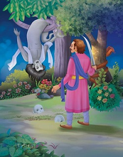

In this story, there was a clever and resourceful boy named Somil. One day, he witnessed a group of thieves burying their stolen treasures in a forest. He decided to steal the treasures for himself.
Somil waited until nightfall and dug up the stolen goods. He then went to the king and informed him about the thieves' activities, returning the treasures as evidence. The king was pleased with Somil's honesty and bravery.
However, the chief of the thieves discovered that Somil had taken the treasures. He plotted to kill Somil and retrieve the stolen goods. He sent one of his men to pretend to be a long-lost relative of Somil, seeking refuge.
Somil, being kind-hearted, welcomed the man into his home. The thief pretended to be grateful and offered to help Somil in any way he could. Somil, unaware of the man's true intentions, revealed the location of the stolen treasures.
The thief reported back to his chief, who, along with his gang, attacked Somil's house. Somil, though young, was clever. He managed to outwit the thieves by pretending to be mad. He danced and sang, confusing the thieves and making them believe he had gone insane.
The chief, thinking Somil was crazy, left him alone and took the stolen goods. Somil's cleverness saved his life and the treasures.
When Betal finished narrating this story, he asked King Vikramaditya a question related to the tale. Despite knowing the answer, Vikramaditya remained silent, determined to carry Betal to the sage without uttering a word.
And thus, the cycle of stories continued, with King Vikramaditya's determination being tested by Betal's tricky questions.
|  |
| Go To Story No. 22 |